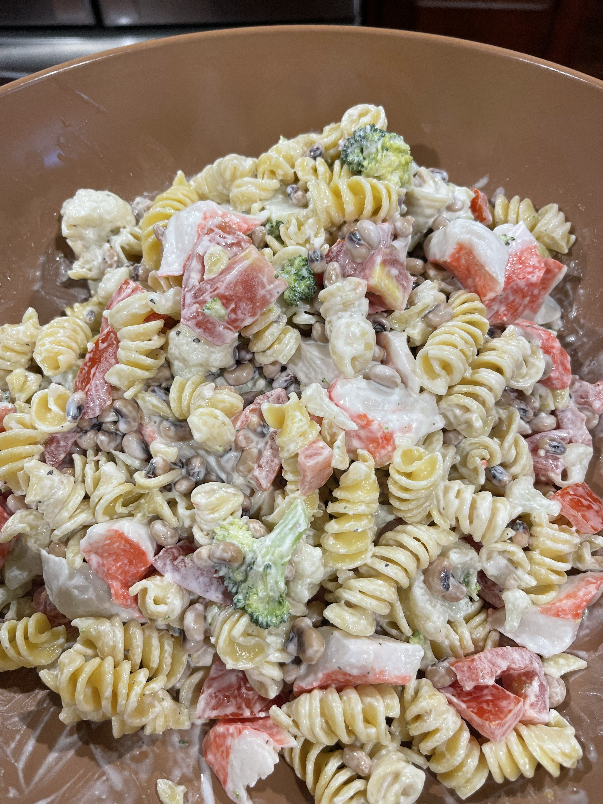

Peasta Salad with Crab

Peasta Salad with Imitation Crabmeat
This is a great, easy, and tasty weeknight meal when the weather just starts to warm up!
The smokey flavor from the Glory black eye peas will compliment the savory cream sauce- plus it makes a ton so you can take it for lunch all week long.
Ingredients
- 1 Cup Mayonnaise
- 1/2 Cup Good Seasons Italian Salad Dressing
- 2 15oz Cans of Glory Foods Black-Eyed Peas
- 16 oz Rotelle Pasta
- 16 oz Imitation Crabmeat
- One Broccoli Crown cut in bite size pieces
- One Small Head of Cauliflower cut in bite size pieces
- 3-4 Seeded Roma Tomatoes Chopped
Steps
- Cut up the Broccoli and Cauliflower and add to boiling water for 5 minutes
- Cook pasta according to package instructions
- Clean and Chop tomatoes
- Drain and rinse blake-eyed peas
- After Broccoli and Cauliflower are done drain a shock with cold water and ice
- Drain and rinse the pasta in cold water
- Add pasta, black-eyed peas, broc, cauli, crabmeat, and tomatoes to a large salad bowl
- In a separate bowl wisk together mayo and salad dressing until smooth
- Gently fold in the dressing into the salad until it's well combined
- Add salt and pepper to taste
- Store left-overs in fridge- it's great for a quick lunch